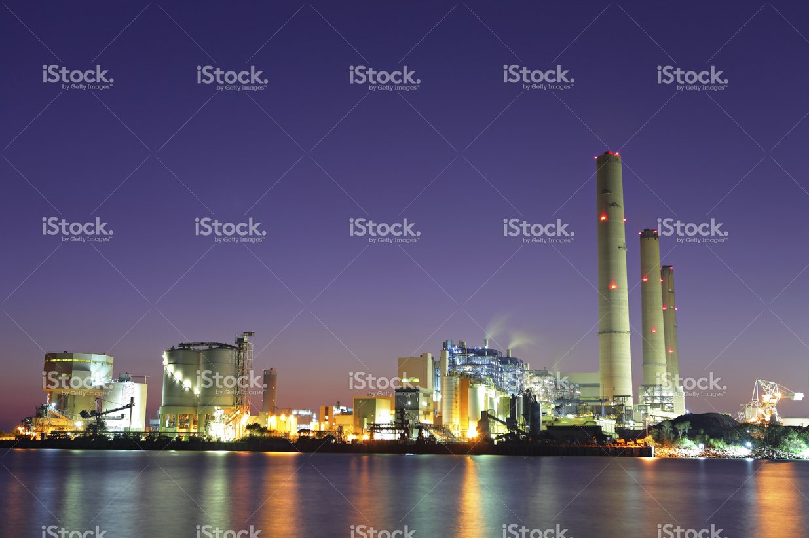

-
Optimierung auf
höchstem LevelMithilfe von TS-Enegry
optimeren Sie alle Assets
Ihres Energieporfolios. -

Pumpspeicherkraftwerke
TS-Energy wird bereits heute genutzt,
um die Mehrheit der Schweizer
Wasserkraftwerke zu optimieren. -

Thermische Kraftwerke
Erzielen Sie höhere
Profitmargen durch
bessere Optimierung -
Handel
TS-Energy
unterstützt auch
bei der Erstellung von
Grenzpreisen fürs Trading.
Überlegene Optimierung Ihres Energieportfolios mit stochastischer dynamischer Programmierung
Mit TS-Energy bietet Ihnen Time-steps eine umfassende Plattform zur Optimierung all Ihrer Assets im Energiebereich. Die Optimierung mit TS-Energy führt zu Ertragssteigerungen von bis zu 7% im Vergleich zu herkömmlichen Optimierungsansätzen. Nicht zuletzt deshalb, vertrauen alle grösseren Schweizer Energieversorger auf die Optimierungsleistung unserer Plattform.
TS-Energy maximiert den erwarteten Ertrag Ihres Energieportfolios indem es optimale Betriebsstrategien generiert für Kraftwerksbetrieb und Handel. TS-Energy bietet Ihnen dabei alle Werkzeuge um optimal vorbereitet zu sein, auf die Herausforderungen von immer volatileren Energiemärkten: Bewertung, Risikoanalyse, Hedging und Einplanung von allen Assets in Ihrem Portfolio.
• Optimierung basierend auf stochastischer dynamischer Programmierung
• Erwiesene Ertragssteigerungen im Vergleich mit konventioneller Optimierung
• Detaillierte Modellierung von Kraftwerken und Assets
• Handelsunterstützung mittels Grenzpreisberechnung
TS-Energy kombiniert bewährte Algorithmen und Bewertungsmethoden aus der Finanzindustrie mit Spezialwissen aus der Energiewirtschaft. Neben der herkömmlichen, linearen Optimierung arbeitet TS-Energy mit einem Algorithmus zur stochastischen dynamischen Optimierung energiewirtschaftlicher Systeme. Die stochastischen Prozesse beschreiben dabei die Unsicherheiten von Basiswerten wie Gas- und Strompreisen und anderen unsicheren Faktoren, wie den wetterbedingten Zuflüssen bei Pumpspeicherkraftwerken.
-
Kraftwerkseinsatz
• Profitmaximierung des Kraftwerksbetriebs
• Ableitung von Grenzpreisen und per-Einheit Speicherwerten
• Verwalten von Produktion und Systemdienstleistungen
• Preisdefinition und Allokation von Systemdienstleistungen
• Profitanalyse von Kraftwerkserweiterungen -
Portfoliooptimierung
• Analyse von Portfolio- und Assetrisiken
• Optimales Hedging des Portfolios
• Report the Greeks of Assets -
Handelsunterstützung
• Ermitteln von optimalen Grenzpreisen
• Preisfindung und Risikoanalyse für Assets und Verträge
• Anzeige von verfügbaren Kapazitäten für Intraday-Handel
Im Vergleich zu herkömmlichen Optimierungsmethoden erzielt TS-Energy Verbesserungen der Wirtschaftlichkeit von z.B. Pumpspeicherkraftwerken. Signifikante Steigerungen des jährlichen Ertrages mit TS-Energy im Vergleich zu konventionellen Optimierungsansätzen sind durch mehrere Kunden bestätigt und publiziert worden.